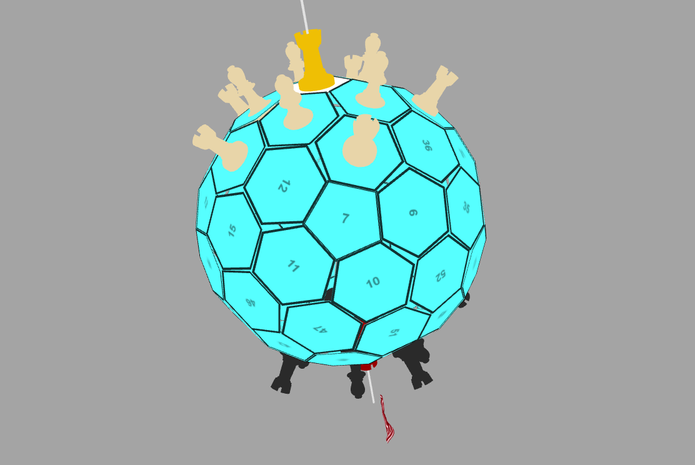

Layoffs Data Cleaning
& EDA (MySQL)
Globális technológiai leépítési adatok tisztítása, duplikáció- és null-kezelése MySQL-ben, majd mélyreható trendelemzés ablakfüggvényekkel és CTE-kkel.

Globális technológiai leépítési adatok tisztítása, duplikáció- és null-kezelése MySQL-ben, majd mélyreható trendelemzés ablakfüggvényekkel és CTE-kkel.

Nyers kérdőíves felmérés tisztítása Power Query-vel, majd interaktív dashboard felépítése a fizetések, programozási nyelvek és munka-magánélet egyensúly elemzésére.
Demográfiai ügyféladatok tisztítása, dinamikus korcsoport-oszlopok kialakítása IF függvényekkel, valamint interaktív értékesítési dashboard Pivot táblákkal és szeletelőkkel.
Egy csonkított ikozaéderen alapuló 3D-s sakkváltozat állapotgépe és lépésvalidációs játékmotorja objektumorientált C++ architektúrában megvalósítva.
